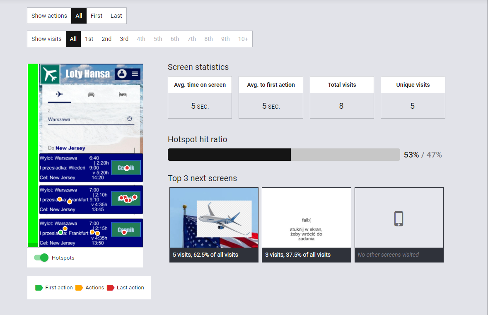
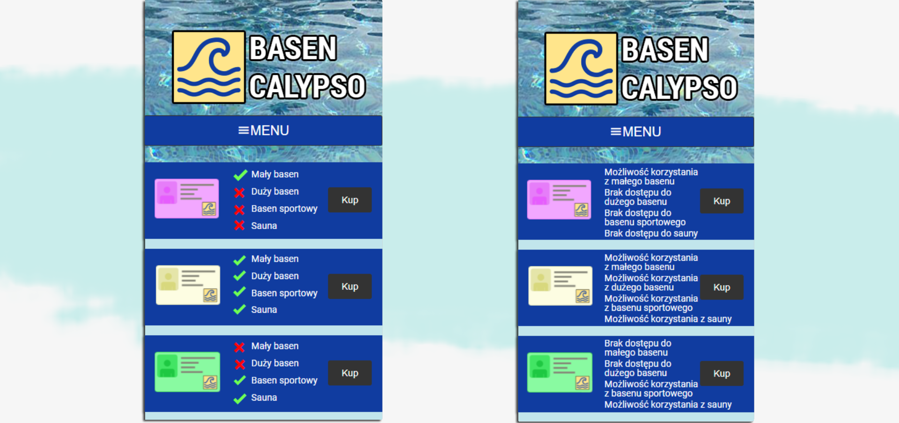

research
Microcopy
University project aimed at conducting usability tests (A/B) on the effectiveness of the presence of microcopy at service-oriented websites
1. Overview
The study's primary focus is to explore the influence of microcopy's tone and content on user reactions, usability, and comprehension. We examined different types of messages, ranging from lighter, more informal ones to more serious and formal tones. The target audience for this research is young individuals aged 18 to 24. Drawing insights from a study conducted by the Nielsen Norman Group, it's revealed that 52% of users consider trustworthy microcopy to be pivotal when making decisions regarding their interactions with a service. This prompts an investigation into how users perceive different types of messages, assessing the impact of varied tones and formality. The research was conducted based on the user experience (A/B) methodology, where one group was presented with a quality microcopy mockup, while the other group was not. The results concluded that the presence of microcopy indeed affects the decision-making process and promotes quicker decision-making.
2. My role and responsibilities
I was a leader of a four-person team. My role was to coordinate the work of our team, communicating progress to the lecturer, creating a mockup for the swimming pool website, coordinating data gathering and conducting analysis, and presenting the results.
3. My partners and stakeholders
I partnered with my fellow college students on this project, as it was an academic project there were no stakeholders.
4. Problem statement
Main aim of the project was to see if the use of a quality microcopy has an impact on the decision making process and to what extent. Is there a noticeable difference in reaction time and how it impacts the overall view of the website?
5. Users and audience
The focus group in the study consists of young adults aged 18-24. These individuals are the primary participants who were involved in the research, which aimed to investigate the impact of microcopy on their interactions and decision-making processes when engaging with various user interfaces. The study specifically targeted this age group to gather insights into how microcopy affects their user experience and decision-making behaviors.
6. Scope and constraints
The scope of this research encompasses the examination of microcopy's impact on user interactions, decision-making processes, and usability. It involves comparing various scenarios such as hotels, airlines, and swimming pools, each represented by different microcopy versions. The main constraint of the project is its scale. The results cannot be conclusive, as the participants age was restricted and only mobile apps mockups were considered, due to software restrictions.
7. Chosen design process
We employed a user experience testing approach, deploying different versions of microcopy in tasks. Basically reiterating on UX (A/B) testing. We utilized tools like Quant ux, Figma, Photoshop for constructing mock-ups and Preely for organizing the basis of testing and measuring reaction times. The comparison is performed across various scenarios, involving a hotel, airline, and swimming pool. The groups were formed in four different configurations (AAA, ABA, BAB, BBB) to evaluate the effectiveness of different microcopy variations. A - signifies a mockup with what was considered a quality microcopy; B - standard or no microcopy. For configurations AAA and BBB there were three participants each and for ABA and BAB there were six. Each group had a set of tasks to complete and the time was measured. After tasks there was a satisfactory survey to see how did the participants see a presence of microcopy. The research encompasses both quantitative and qualitative measures, examining participants' reactions, usability, and satisfaction levels.
8. Outcome and results
The outcomes of the research highlight the significance of well-crafted microcopy. In scenarios involving the swimming pool, a positive correlation is established between effective microcopy and quicker task completion, as well as improved user intuitiveness. Conversely, for the airline task, no substantial difference is observed between the effectiveness of microcopy and standard text. The hotel task proves to be more challenging, taking longer to complete and receiving lower intuitive ratings. Interestingly, participants prefer the standard version over microcopy for this scenario.
9. Reflections
As the research findings highlight the varying impact of microcopy across different scenarios, it prompts us to reflect on the intricate relationship between content, context, and user preferences. The divergent results for the hotel, airline, and swimming pool scenarios underscore the need for nuanced microcopy strategies tailored to specific user needs and scenarios. This research journey illuminates the complexity of user-centric design decisions and the importance of understanding users' cognitive processes and expectations.